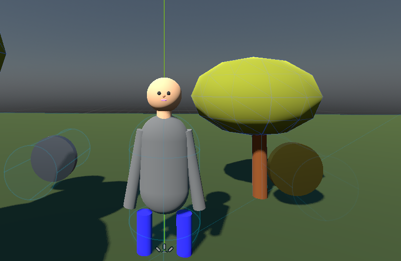
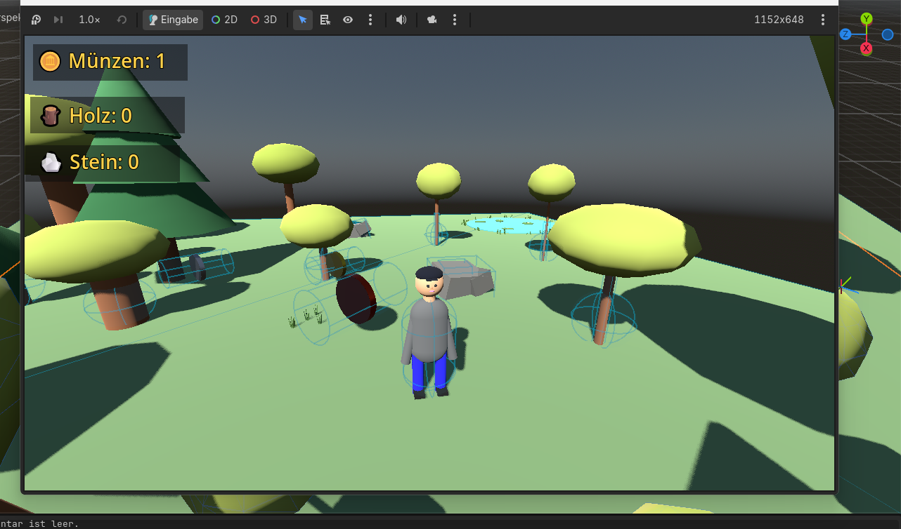
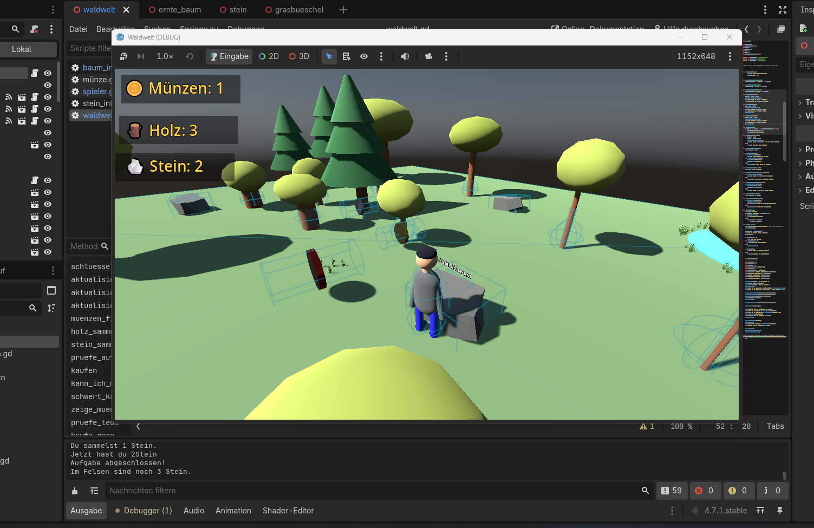
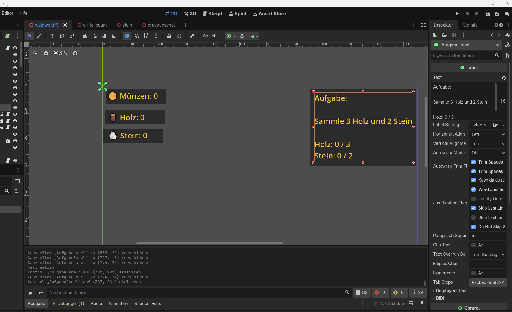
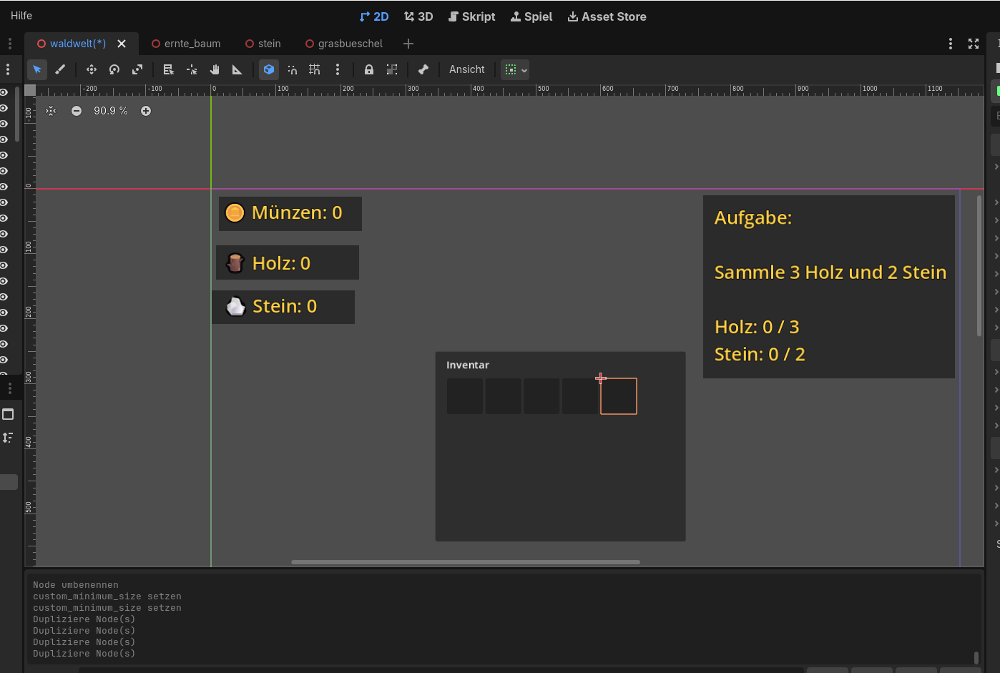
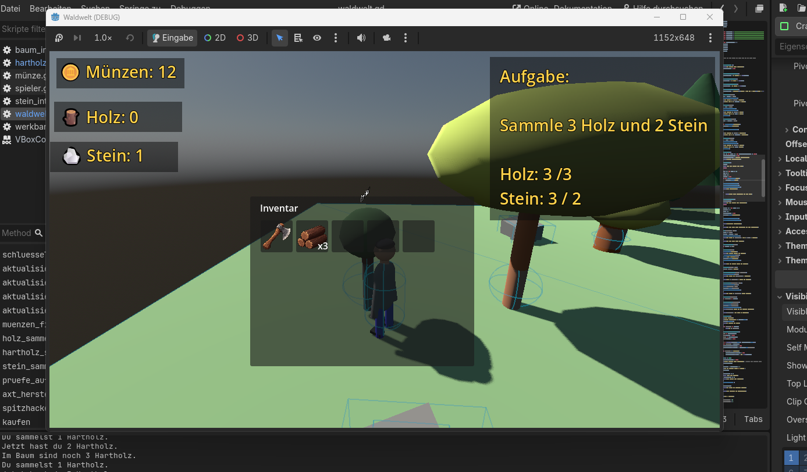
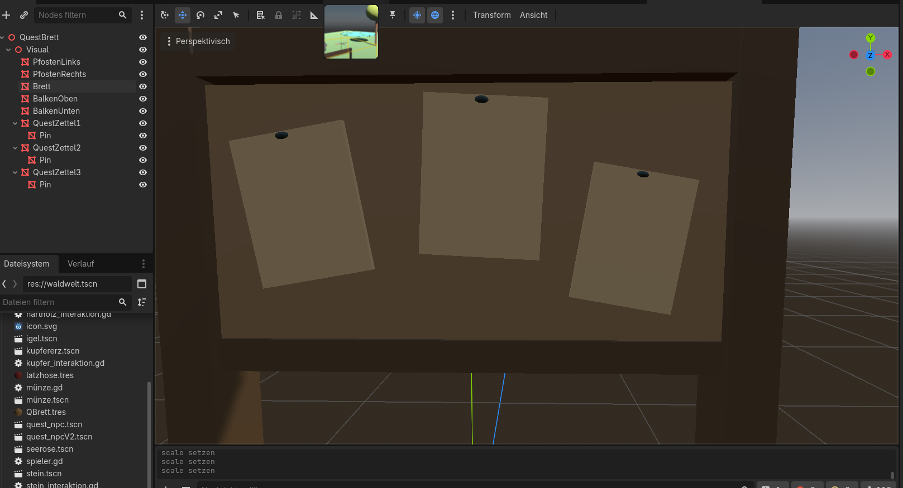

Sammeln, Inventar und die ersten Quests
Nachdem unsere erste kleine Waldwelt entstanden war und wir endlich darin herumlaufen konnten, stellte sich ziemlich schnell die nächste Frage: Was macht man eigentlich in diesem Wald?
Nur zwischen Bäumen herumzulaufen ist zwar überraschend entspannend, aber als langfristiges Spielkonzept vielleicht ein bisschen dünn. Also brauchte die Waldwelt etwas zu tun.
Und damit begann die Phase, in der aus unserer Testwelt langsam tatsächlich ein Spiel wurde.
Ein Baum ist nicht mehr nur ein Baum
Am Anfang standen die Bäume einfach herum. Sie sahen nett aus, spendeten Schatten – und damit war ihre Karriere zunächst auch schon beendet.
Das sollte sich ändern. Unsere ersten Ressourcen wurden Holz und Stein. Bäume konnten nun tatsächlich abgeerntet werden und lieferten Holz. Steine wurden ebenfalls zu interaktiven Objekten.
Dabei wollten wir nicht einfach nur ein Objekt anklicken und es sofort verschwinden lassen. Bäume lieferten mehrere Einheiten Holz, ihre Baumkrone reagierte auf den Abbau und nach einiger Zeit konnten die Ressourcen wieder erscheinen.
Plötzlich reagierte die Welt auf das, was der Spieler tat. Und aus einem Baum wurde endlich mehr als Dekoration: ein Rohstofflieferant. Seine Zustimmung dazu haben wir allerdings nie eingeholt.


Jetzt haben wir Holz. Aber wie viel?
Mit den ersten Rohstoffen entstand sofort das nächste Problem: Woher weiß der Spieler eigentlich, was er gesammelt hat?
Also bekam unsere Waldwelt ihr erstes richtiges HUD. Zunächst gab es nur die Münzen. Danach kamen Holz und Stein dazu.
Auf einmal konnte man direkt sehen, dass das Sammeln tatsächlich funktionierte. Aus „Ich habe gerade auf diesen Stein gedrückt“ wurde plötzlich: „Ich besitze jetzt tatsächlich einen Stein.“
Fortschritt!

Sammeln allein reicht aber nicht
Nachdem das Sammeln funktionierte, tauchte ziemlich schnell die nächste Frage auf: Warum sammle ich das alles eigentlich?
Die Antwort war unser erstes kleines Quest-System.
Die erste Aufgabe war noch angenehm überschaubar: Sammle 3 Holz und 2 Stein.
Keine uralte Prophezeiung. Kein Dämonenkönig. Keine Rettung der Welt.
Drei Holz. Zwei Steine. Auch Helden müssen irgendwo anfangen.
Die Questanzeige bekam einen eigenen Bereich im HUD und konnte während des Sammelns den aktuellen Fortschritt anzeigen.

Das erste Inventar
Als Nächstes wollten wir die gesammelten Gegenstände nicht dauerhaft nur als Zahlen am Bildschirmrand darstellen.
Also entstand das erste Inventar.
Zunächst war es noch sehr einfach aufgebaut: ein kleines Fenster und einige Slots. Aber schon dieser erste Prototyp legte eine wichtige Grundlage für das spätere Spiel.
Gegenstände sollten nicht einfach irgendwo als Zahl gespeichert werden. Der Spieler sollte sie tatsächlich besitzen und sehen können.


Wenn plötzlich mehrere Systeme miteinander sprechen
Der eigentlich spannende Moment kam aber erst danach.
Sammeln funktionierte. Das HUD funktionierte. Das Inventar funktionierte. Und das Quest-System funktionierte.
Jetzt mussten diese Dinge miteinander verbunden werden.
Der Spieler sammelte Holz oder Stein. Der Bestand wurde aktualisiert, das Inventar zeigte die Gegenstände und gleichzeitig überprüfte die aktive Aufgabe, ob bereits genug davon gesammelt worden war.
Und natürlich sammelten wir beim Testen irgendwann drei Steine, obwohl nur zwei verlangt wurden.
Gege war zu diesem Zeitpunkt zwar noch gar nicht Gege – aber offenbar galt schon damals: Lieber einen Stein zu viel mitbringen. Sicher ist sicher.
Ein richtiges Questbrett muss natürlich auch sein
Eine dauerhaft eingeblendete Aufgabe war für den Anfang praktisch. Langfristig wollten wir Quests aber nicht einfach irgendwo erscheinen lassen.
Also entstand ein richtiges Questbrett.
Natürlich hätte auch ein einfacher Knopf gereicht. Aber wo wäre da der Spaß?
Das Brett bekam einen Holzrahmen, mehrere angeheftete Zettel und sollte später als zentrale Stelle für neue Aufträge dienen.

Aus Holz und Stein wird langsam ein Spiel
Rückblickend waren Holz, Stein, ein kleines Inventar und eine Aufgabe natürlich noch keine riesigen Spielsysteme.
Aber diese Entwicklungsphase war enorm wichtig. Zum ersten Mal hatten wir eine richtige Gameplay-Schleife:
Erkunden → Ressourcen finden → sammeln → Inventar füllen → Aufgabe erfüllen → Fortschritt bekommen
Und damit bekam unsere Waldwelt langsam einen Zweck.
Natürlich dauerte es nicht lange, bis die nächsten Fragen kamen: Was passiert mit dem ganzen Holz? Können wir Werkzeuge herstellen? Brauchen wir verschiedene Holzarten?
Und wenn wir schon Steine abbauen können … warum eigentlich nicht auch Kupfer?
Diese Frage führte uns direkt zur nächsten großen Entwicklungsphase.
Im nächsten Dev Blog: Crafting, Schmiede, neue Rohstoffe – und der Moment, in dem aus ein bisschen Holz und Stein plötzlich Werkzeuge und Baupläne wurden.